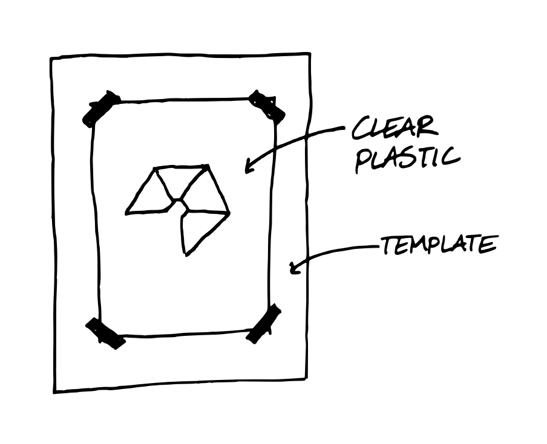
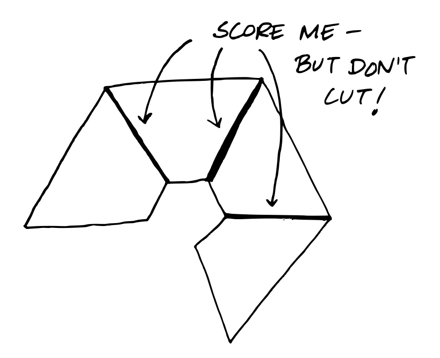
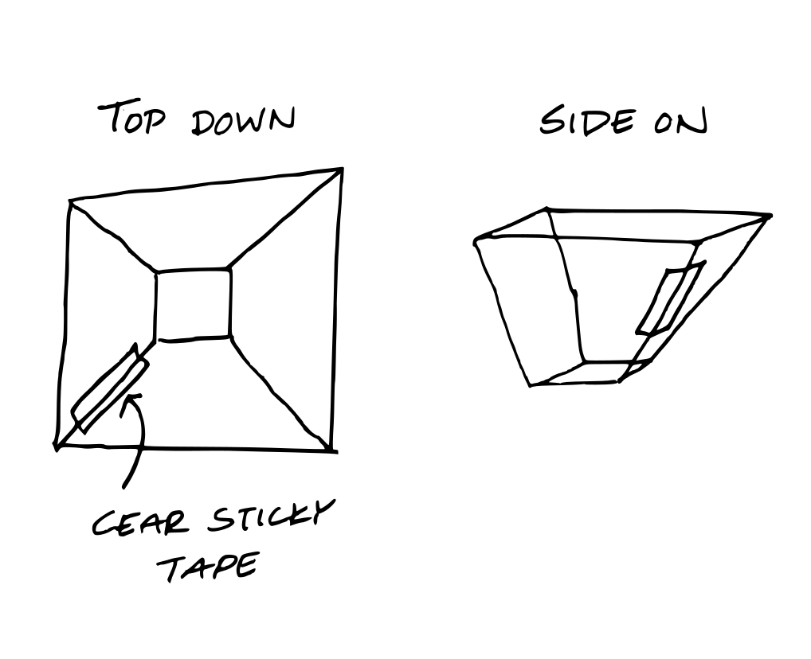
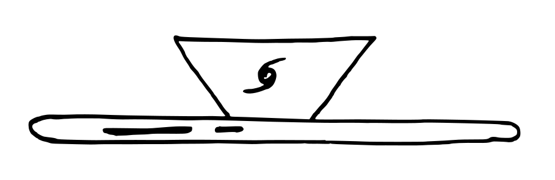

Using the Holograms
Here's a video explaining how to use our hologram pyramids:
Creating Your Own
Haven't been able to make it to one of our events? Would you still like a pyramid to play our holograms? You can make your own at home with these instructions!
Downloads
You can download a template to print out that will help you create your own here and if you are lucky enough to be able to print on acetate you can download an extra template here.
You can find illustrated instructions below, or on your template sheet.
Instructions
You will need
- A piece of plastic sheeting (about 0.5mm thick). You could use some left over packaging!
- A printer (for the template!)
- Scissors or preferably a craft knife
- Clear sticky tape
- A smartphone or tablet to play the holograms
Step 1

Print out the template and tape your clear plastic down onto it to hold it in place. If this is going to be some trouble, you can trace the template with a felt tip. Cut out the outer shape of the template with your craft knife or scissors.
Step 2

Score along the marked edges with your scissors or craft knife (it helps to use a ruler to keep your knife/scissors straight!). Make sure not to cut through the plastic, just to mark it. This will make it easier to fold later.
Step 3

Fold along the scored edges and build the pyramid. Close the loop with some sticky tape.
Step 4

Place on your smartphone and watch the holograms!